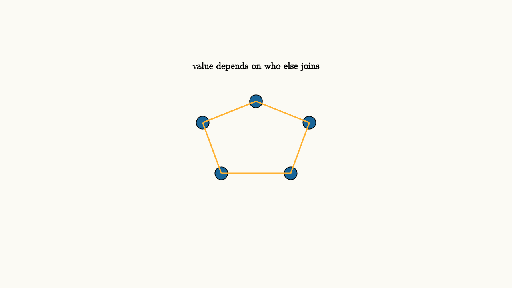

Network Effects Make Value Social
Some products become more useful as more people join. A phone network, payment system, marketplace, social platform, operating system, or file format gains value from participation. This is a network effect.
The simplest phone network gives the intuition. If only one person owns a phone, it is nearly useless. With two people, there is one possible connection. With three, there are three possible pairwise connections. With many users, the number of possible connections grows quickly. Value comes partly from the product itself and partly from who else is present.
A simple model might write a user's value as
where $n$ is the number of other users. More realistic models saturate, but the central idea remains: adoption changes the value of adoption.
There are direct and indirect versions. A messaging app has a direct network effect because users want other users on the same app. A game console has an indirect network effect because more players attract more developers, and more games attract more players. A marketplace has two sides: buyers want sellers, and sellers want buyers.

source
background = [0.985, 0.98, 0.955, 1]
camera = Camera(4.8b)
mesh network = block {
. fill{BLUE} center{[-1.0, 0.4, 0]} Circle(0.12)
. fill{BLUE} center{[0.0, 0.8, 0]} Circle(0.12)
. fill{BLUE} center{[1.0, 0.4, 0]} Circle(0.12)
. fill{BLUE} center{[-0.65, -0.55, 0]} Circle(0.12)
. fill{BLUE} center{[0.65, -0.55, 0]} Circle(0.12)
. stroke{ORANGE, 2} Line(start: [-1.0, 0.4, 0], end: [0.0, 0.8, 0])
. stroke{ORANGE, 2} Line(start: [0.0, 0.8, 0], end: [1.0, 0.4, 0])
. stroke{ORANGE, 2} Line(start: [-1.0, 0.4, 0], end: [-0.65, -0.55, 0])
. stroke{ORANGE, 2} Line(start: [1.0, 0.4, 0], end: [0.65, -0.55, 0])
. stroke{ORANGE, 2} Line(start: [-0.65, -0.55, 0], end: [0.65, -0.55, 0])
. center{[0, 1.45, 0]} Text("value depends on who else joins", 0.62)
}
"network value"
play Fade(0.6)Network effects can create tipping. If few people use a system, joining is unattractive. If many use it, joining becomes compelling. That can produce multiple equilibria: low adoption and high adoption can both be stable under different expectations.
This is why early expectations matter. A new payment app may need discounts, partnerships, or compatibility with existing systems to get past the low-adoption region. Once enough people use it, the network itself does part of the persuasion. Before that threshold, even a useful tool can feel empty.
source
param adoption = 0.25
background = [0.985, 0.98, 0.955, 1]
camera = Camera(4.8b)
let Curve = |adoption| block {
. stroke{GRAY, 2} Line(start: [-2.3, -1.0, 0], end: [2.3, -1.0, 0])
. stroke{BLUE, 3} ExplicitFunc(|x| -0.75 + 1.55 / (1 + exp(-2.4 * x)), [-2, 2, 120])
. fill{ORANGE} center{[-2 + 4 * adoption, -0.75 + 1.55 / (1 + exp(-2.4 * (-2 + 4 * adoption))), 0]} Circle(0.08)
. center{[0, 1.45, 0]} Text("adoption can tip after a threshold", 0.62)
}
"early"
mesh c = Curve(adoption: $adoption)
play Fade(0.5)
"after tipping"
adoption = 0.78
c = Curve(adoption: $adoption)
play Lerp(1.0)This explains why compatibility, standards, migration costs, and early subsidies matter. A technically good product can struggle if users expect others to stay away. A weaker product can persist if its network is already large.
Network effects can also create lock-in. Switching away from a platform may mean losing contacts, files, habits, purchases, or reputation. Economists care about this because the market may reward early scale and compatibility as much as product quality. Policy debates about interoperability and data portability often begin with this point.
The lesson to keep: with network effects, value is partly social. Expectations and adoption reinforce each other, so the path a market takes can shape where it ends up.